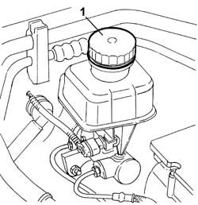

0010T64 Brake and/or clutch fluid - Check level and top up, if necessary
- Path
- Procedures > 00 MAINTENANCE > 0010 NEW UNITS AND MAINTENANCE > 0010T vehicle oil and fluids > 0010T64 Brake and/or clutch fluid - Check level and top up, if necessary
- Kind
- repair procedure (removal / refitting; the operation number is the code)
- Applies to
- all engines; all production periods
- Interactive page
- https://sloeber94.github.io/elrnDB-lThss/en/#/606291
Applies to: all engines; all production periods
1. Undo the cap and check that the fluid in the reservoir is at the maximum level; if this is not the case, top up using the recommended fluid.
 | Description | Qty. | Component | Type | Classification |
|---|---|---|---|---|---|
. | TUTELA TOP 4 | 1.5 | BRAKE-CLUTCH HYDRAULIC SYSTEM | Synthetic fluid | DOT 4 - ISO 4925 SAE J1704 CUN |

Topics that link to this page (9)
- 1004B10 POWER UNIT with manual gearbox - R.R.
- 3310A30 FRONT BRAKE CALIPER (one) - R.R. - Includes bleeding air
- 3330C10 MASTER CYLINDER (PUMP) - R.R. - Bleed air from brakes separately
- 3330C30 brake fluid reservoir - r + r and wash inside
- 3330D04 BRAKE SERVO - R.R. - Includes separation from master cylinder (pump) - for versions with Adaptive Cruise Control (A.C.C.).
- 3340A12 A.B.S. hydraulic and electronic CONTROL UNIT - R.R. - Includes bleeding air
- 3340B52 Rigid PIPE (one), from master cylinder (pump) to A.B.S. hydraulic control unit - R.R.
- 3340B55 RIGID PIPE from hydraulic CONTROL UNIT to LEFT FRONT BRAKE - R.R.
- 5580A78 Braking system check control unit mounting bracket - R.R.